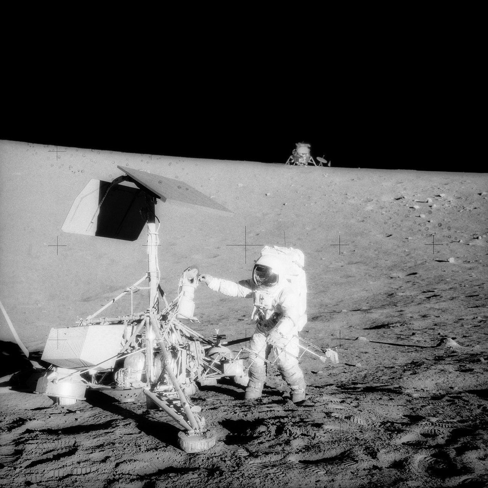
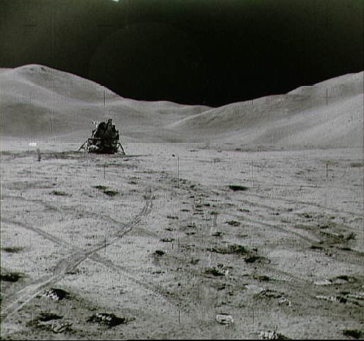
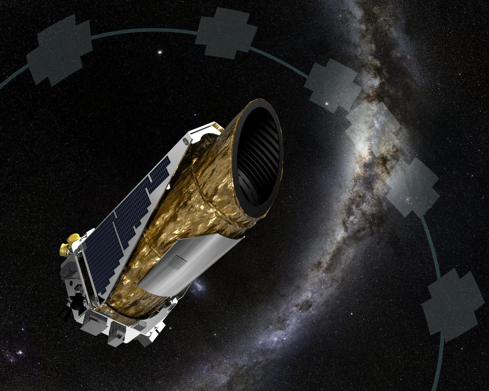
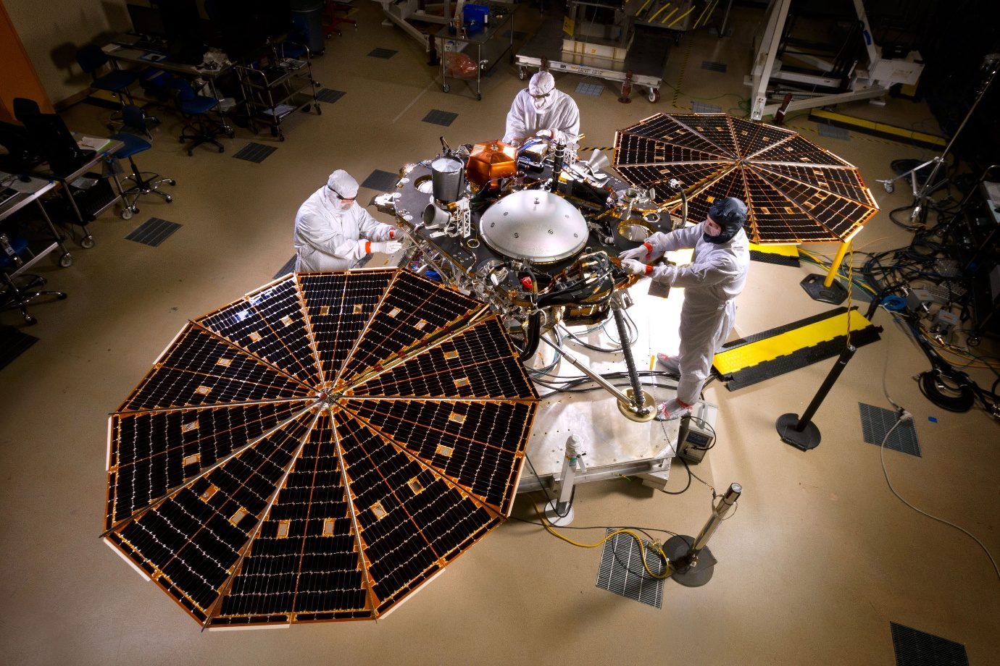

The long silence
When each machine last spoke, moved, or was switched off, oldest first.
Surveyor Landers
The MoonSurveyor 7 fell silent after the lunar night.

Apollo Lunar Modules
The MoonApollo 17 left the last descent stage.

Lunar Roving Vehicles
The MoonApollo 17 rover parked at Taurus-Littrow.

ALSEP Science Stations
The MoonGround control switched off all stations on 30 September.

Viking 1 and 2 Landers
MarsViking 1 lander lost after a command error, 11 November.

Sojourner Rover
MarsLast signal from the Pathfinder system, 27 September.

NEAR Shoemaker
Deep spaceLast contact on 28 February, two weeks after landing.

Pioneer 10 and 11
Deep spacePioneer 10's last faint signal, 23 January (Pioneer 11 lost 1995).

Spirit and Opportunity
MarsOpportunity lost to a global dust storm; Spirit ended 2010.

Dawn
Deep spaceFuel ran out; NASA announced the end on 1 November.

Kepler Space Telescope
Deep spaceFuel ran out; retired on 30 October.

Phoenix and InSight
MarsInSight mission ended 21 December after dust covered its panels.

Ingenuity Helicopter
MarsNASA ended the mission on 25 January.